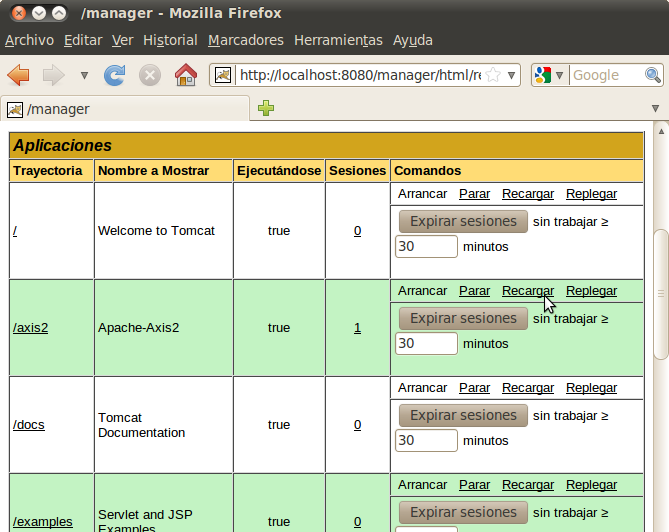

Despliegue de servicios web con Axis2 y CXF
Despliegue en Axis2
Para desplegar (deploy) un archivo en Axis2, hay que copiar el paquete AAR del proyecto servidor a la carpeta axis2-1.5.1/repository/services/ y esperar unos segundos a que Axis2 lo detecte. Para eliminarlo (undeploy) tan sólo hay que eliminarlo de ahí.
Para generar el paquete, pulsamos con el botón derecho sobre la raíz del proyecto Axis2SWSeguroServidor y pulsamos Run as... Maven package. Se descargan una serie de archivos y se genera el paquete en formato .jar, cuya ruta se indica en la salida por consola:
[...]
Tests run: 0, Failures: 0, Errors: 0, Skipped: 0
[INFO]
[INFO] --- maven-jar-plugin:2.2:jar (default-jar) @ SWSeguroServidor ---
[INFO] Building jar: /home/servicios/workspace/Axis2SWSeguroServidor/target/
SWSeguroServidor-0.0.1-SNAPSHOT.jar
[INFO] -------------------------------------------------------
[INFO] BUILD SUCCESS
[INFO] -------------------------------------------------------
[INFO] Total time: 13.411s
[INFO] Finished at: Thu May 20 13:13:07 CEST 2010
[INFO] Final Memory: 4M/15M
[INFO] -------------------------------------------------------
Podemos copiarlo tal cuál a la carpeta de servicios del repositorio de Axis2, o bien podemos copiarlo con el nombre y la extensión cambiados:
servicios@servicios:~$ cp /home/servicios/workspace/Axis2SWSeguroServidor/
target/SWSeguroServidor-0.0.1-SNAPSHOT.jar
axis2-1.5.1/repository/services/SWSeguro.aar
En la consola donde esté ejecutado el servidor de Axis2, observamos:
[INFO] Deploying Web service: SWSeguro.aar -
file:/home/servicios/axis2-1.5.1/repository/services/SWSeguro.aar
Si ahora ejecutamos el cliente en esta misma consola obtenemos información sobre la verificación de los tokens del mensaje del cliente, mientras que en la consola del cliente obtenemos la respuesta (el saludo), que ha venido codificada, como podemos comprobar en la captura del TCP Monitor.
Despliegue de servicios Axis2 en Tomcat
Apache-Tomcat se descarga de http://tomcat.apache.org. Descargamos la versión 6, y obtenemos un archivo comprimido apache-tomcat-6.0.26.tar.gz que descompimimos en la carpeta donde vayamos a instalarlo.
servicios@servicios:~$ tar xzvf apache-tomcat-6.0.26.tar.gz servicios@servicios:~$ rm apache-tomcat-6.0.26.tar.gz servicios@servicios:~$ ./apache-tomcat-6.0.26/bin/startup.sh
El último comando ejecuta apache tomcat sólo si la variable JAVA_HOME está correctamente definida. Ahora podemos acceder con el navegador web a la URL http://localhost:8080/. Apagamos el servidor para añadir un usuario administrador:
servicios@servicios:~$ ./apache-tomcat-6.0.26/bin/shutdown.sh
Editamos el archivo apache-tomcat-6.0.26/conf/tomcat-users.xml y añadimos el usuario:
<role rolename="manager"/> <user username="servicios" password="servicios" roles="manager" />
Volvemos a arrancar el servidor de apache-tomcat y ya podemos entrar en la sección "Tomcat Manager" del menú de aministración que hay arriba a la izquierda, con usuario y contraseña "servicios". En esta página hay una sección de despliegue que nos permite seleccionar un archivo WAR a cargar para desplegar. Esta es una de las maneras de desplegar una aplicación web en Tomcat. La otra forma es copiándola a la carpeta apache-tomcat-6.0.26/webapps.
Para desplegar servicios de CXF tendremos que empaquetarlos en un archivo WAR y desplegarlo directamente en Tomcat. Para desplegar en Axis2 tendremos que desplegar el archivo axis2.war que podemos descargar de la dirección http://ws.apache.org/axis2/download/1_5_1/download.cgi. El archivo .war está en un .zip, lo descomprimimos y desplegamos en tomcat el archivo .war. El interfaz web nos devuelve la respuesta "Mensaje: OK" y en la lista de aplicaciones aparecerá /axis2.
Ahora podemos acceder con el navegador web a la URL http://localhost:8080/axis2/ donde nos permite ver la lista de servicios y administrar. Mientras Axis2 esté desplegado en Tomcat, tendremos su estructura de carpetas y podremos desplegar nuestros servicios de Axis2 copiando sus paquetes .aar a la carpeta
apache-tomcat-6.0.26/webapps/axis2/WEB-INF/services/
El despliegue se hará en caliente (pasados unos segundos lo autodetectará y desplegará). Para ver las excepciones tendremos que ver el archivo de log de Tomcat:
servicios@servicios:~$ cat apache-tomcat-6.0.26/logs/catalina.out servicios@servicios:~$ tail -n 20 apache-tomcat-6.0.26/logs/catalina.out
Ahora vamos a copiar los módulos de Rampart a la estructura de directorios de Axis2.
servicios@servicios:~$ cp rampart-1.5/modules/*
apache-tomcat-6.0.26/webapps/axis2/WEB-INF/modules/
servicios@servicios:~$ cp rampart-1.5/lib/*
apache-tomcat-6.0.26/webapps/axis2/WEB-INF/lib/
Reiniciamos Axis2 desde la página de administración de Tomcat:

Vamos a desplegar el servicio web de Axis2 que tenemos en /home/servicios/workspace/Axis2SWSeguroServidor/target/ SWSeguroServidor-0.0.1-SNAPSHOT.jar:
servicios@servicios:~$ cp /home/servicios/workspace/Axis2SWSeguroServidor/
target/SWSeguroServidor-0.0.1-SNAPSHOT.jar
/home/servicios/apache-tomcat-6.0.26/webapps/axis2/WEB-INF/services/
SWSeguro.aar
servicios@servicios:~$ tail -n 5 apache-tomcat-6.0.26/logs/catalina.out
[...]
[INFO] Deploying module: rampart-1.5 - file:/home/servicios/
apache-tomcat-6.0.26/webapps/axis2/WEB-INF/modules/rampart-1.5.mar
[INFO] Deploying Web service: SWSeguro.aar - file:/home/servicios/
apache-tomcat-6.0.26/webapps/axis2/WEB-INF/services/SWSeguro.aar
En primer lugar comprobamos en el log que el servicio se ha desplegado sin excepciones. En segundo lugar podemos comprobar con el navegador (http://localhost:8080/axis2/services/listServices) que nuestro servicio está listado en Axis2 y que su WSDL se puede descargar. Por último, ejecutamos nuestro cliente (indicando en el endpoint que el puerto es el 8080, a menos que tengamos el TCP Monitor redirigiendo los paquetes ahí), y comprobamos que el cliente obtiene la respuesta correcta.
Despliegue de servicios CXF en Tomcat
Copiamos el proyecto SWSeguroServicio y lo pegamos con el nombre SWSeguroServicioWar. Editamos el pom.xml para actualizarle el groupId y el artifactId, y para indicarle que queremos el empaquetamiento de tipo war:
<packaging>war</packaging>
Una vez hecho este cambio, debemos pulsar sobre el proyecto la opción Maven / Update project configuration. Para generar el .war debemos pulsar sobre el proyecto, Run / Maven package.
Creamos una clase ServletSeguro, que herede de la clase CXFNonSpringServlet y que esté en el paquete es.ua.jtech.seguro.servlet. Podemos hacer caso a la sugerencia de añadir un default serialVersionUID, y con el botón derecho en la opción Source, hacemos click en Override methods y sobrecargamos el método loadBus de la clase padre. Después de la llamada al superconstructor, añadimos:
org.apache.cxf.BusFactory.setDefaultBus(getBus());
javax.xml.ws.Endpoint.publish("/p1", new SeguroImpl());
Configuramos el servlet en el descriptor web.xml que se encuentra en src/main/webapp/WEB-INF
<!DOCTYPE web-app PUBLIC "-//Sun Microsystems, Inc.//DTD Web Application 2.3//EN" "http://java.sun.com/dtd/web-app_2_3.dtd" > <web-app> <display-name>Archetype Created Web Application</display-name> <servlet> <servlet-name>ServletSeguro</servlet-name> <servlet-class>es.ua.jtech.seguro.servlet.ServletSeguro</servlet-class> </servlet> <servlet-mapping> <servlet-name>ServletSeguro</servlet-name> <url-pattern>/servicios/*</url-pattern> </servlet-mapping> </web-app>
Generamos el .war y lo desplegamos en Tomcat. Ahora el cliente debería acceder al endpoint http://localhost:8080/SWSeguroWar/servicios/SeguroSOAP de donde también se puede obtener el WSDL añadiendo al endpoint "?wsdl".